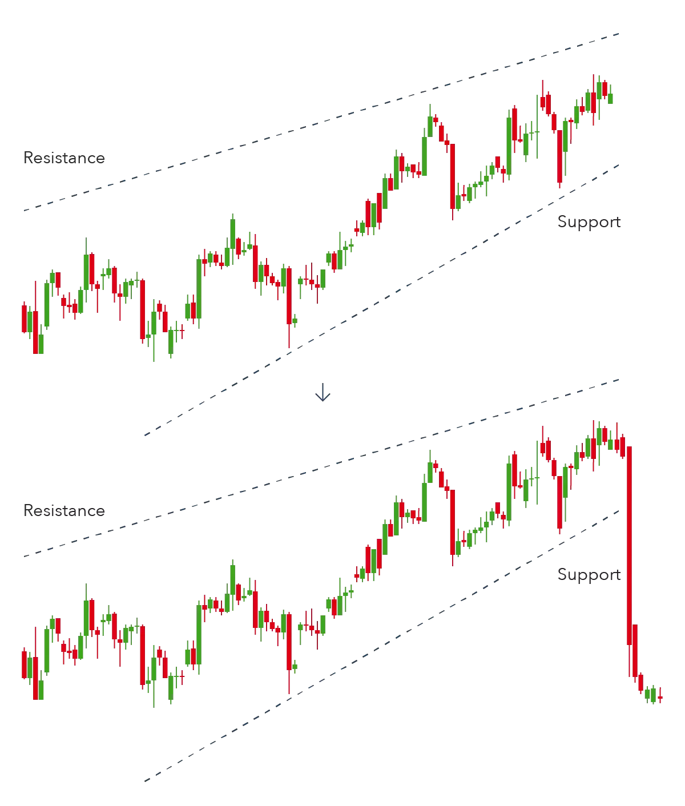

Head and shoulders is a chart pattern in which a large peak has a slightly smaller peak on either side of it. Traders look at head and shoulders patterns to predict a bullish-to-bearish reversal.
Typically, the first and third peak will be smaller than the second, but they will all fall back to the same level of support, otherwise known as the ‘neckline’. Once the third peak has fallen back to the level of support, it is likely that it will breakout into a bearish downtrend.
2
Double top
A double top is another pattern that traders use to highlight trend reversals. Typically, an asset’s price will experience a peak, before retracing back to a level of support. It will then climb up once more before reversing back more permanently against the prevailing trend.
3
Double bottom
A double bottom chart pattern indicates a period of selling, causing an asset’s price to drop below a level of support. It will then rise to a level of resistance, before dropping again. Finally, the trend will reverse and begin an upward motion as the market becomes more bullish.
A double bottom is a bullish reversal pattern, because it signifies the end of a downtrend and a shift towards an uptrend.
4
Rounding bottom
A rounding bottom chart pattern can signify a continuation or a reversal. For instance, during an uptrend an asset’s price may fall back slightly before rising once more. This would be a bullish continuation.
An example of a bullish reversal rounding bottom – shown below – would be if an asset’s price was in a downward trend and a rounding bottom formed before the trend reversed and entered a bullish uptrend.
5
Cup and handle
The cup and handle pattern is a bullish continuation pattern that is used to show a period of bearish market sentiment before the overall trend finally continues in a bullish motion. The cup appears similar to a rounding bottom chart pattern, and the handle is similar to a wedge pattern – which is explained in the next section.
Following the rounding bottom, the price of an asset will likely enter a temporary retracement, which is known as the handle because this retracement is confined to two parallel lines on the price graph. The asset will eventually reverse out of the handle and continue with the overall bullish trend.
6
Wedges
Wedges form as an asset’s price movements tighten between two sloping trend lines. There are two types of wedge: rising and falling.
A rising wedge is represented by a trend line caught between two upwardly slanted lines of support and resistance. In this case the line of support is steeper than the resistance line. This pattern generally signals that an asset’s price will eventually decline more permanently – which is demonstrated when it breaks through the support level.

7
Pennant or flags
Pennant patterns, or flags, are created after an asset experiences a period of upward movement, followed by a consolidation. Generally, there will be a significant increase during the early stages of the trend, before it enters into a series of smaller upward and downward movements.
8
Ascending triangle
The ascending triangle is a bullish continuation pattern which signifies the continuation of an uptrend. Ascending triangles can be drawn onto charts by placing a horizontal line along the swing highs – the resistance – and then drawing an ascending trend line along the swing lows – the support.
9
Descending triangle
In contrast, a descending triangle signifies a bearish continuation of a downtrend. Typically, a trader will enter a short position during a descending triangle – possibly with CFDs – in an attempt to profit from a falling market.
10
Symmetrical triangle
The symmetrical triangle pattern can be either bullish or bearish, depending on the market. In either case, it is normally a continuation pattern, which means the market will usually continue in the same direction as the overall trend once the pattern has formed.
Symmetrical triangles form when the price converges with a series of lower peaks and higher troughs. In the example below, the overall trend is bearish, but the symmetrical triangle shows us that there has been a brief period of upward reversals.